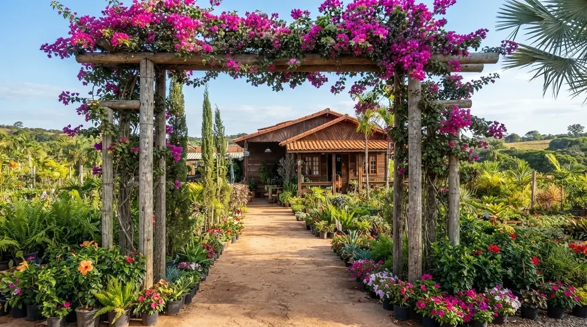
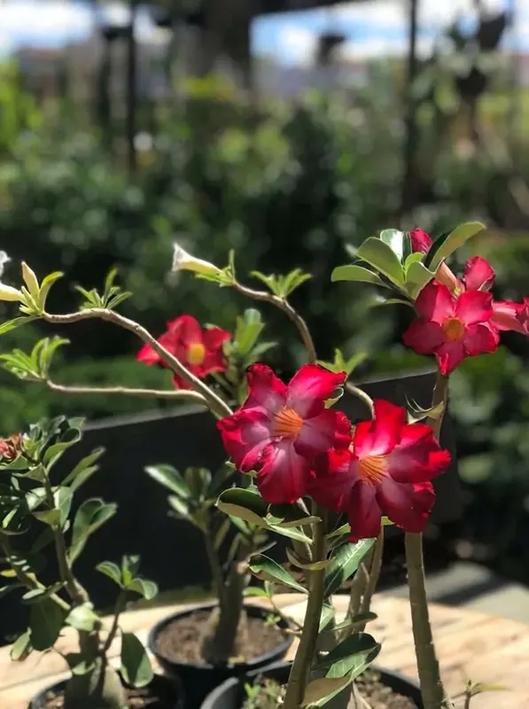
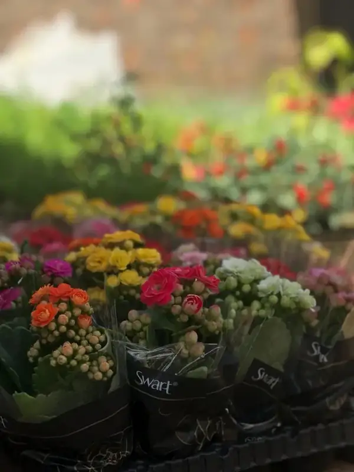
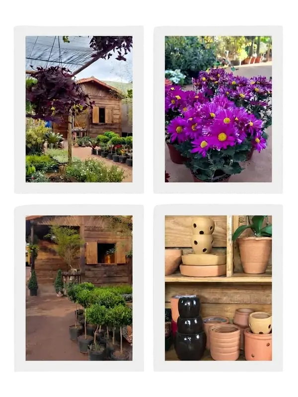
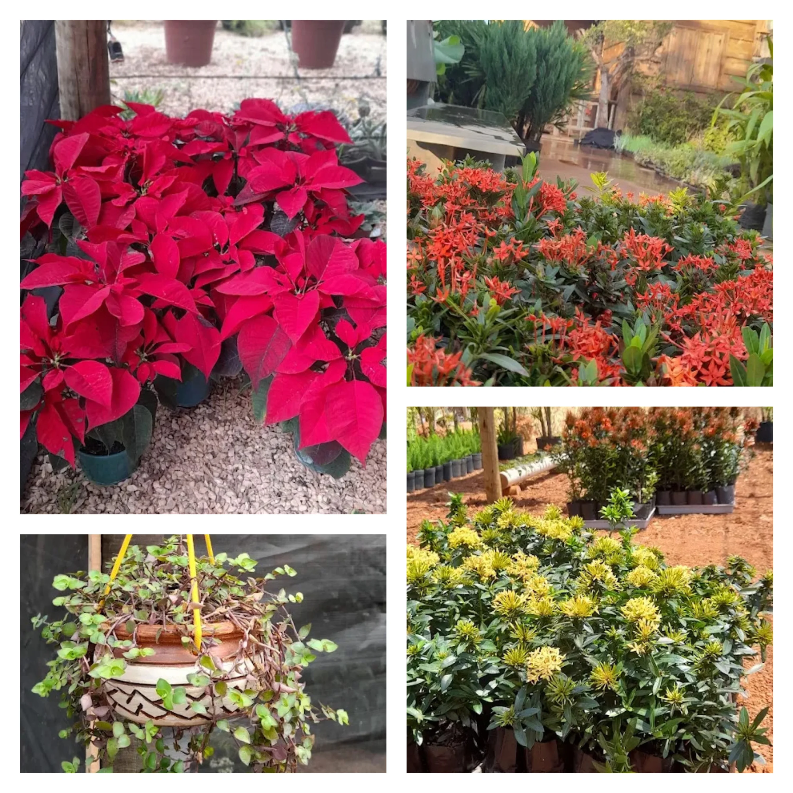
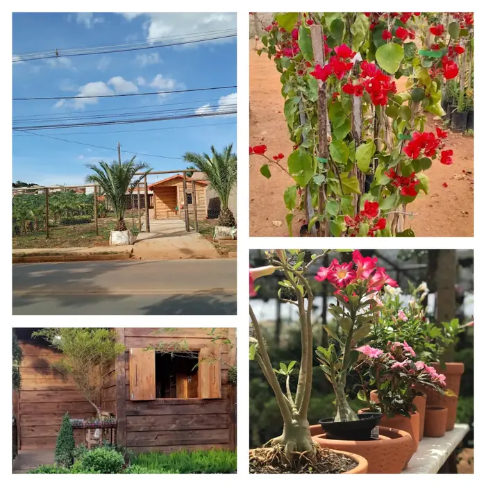

Bougainville Jardins
" Cuidamos do seu jardim com muita arte e bom gosto! "
Conheça-nos
Sobre Nós

A Bougainville Jardins nasceu em 5 de abril de 2021, trazendo uma experiência de aproximadamente 17 anos com plantas e paisagismo. Antes da criação da Bougainville, nosso fundador já trabalhava com plantas e paisagismo em uma loja anterior.
Pouco mais de um mês após sua fundação, a Bougainville abriu suas portas ao público, mesmo diante dos desafios daquele período.
Hoje trabalhamos com paisagismo, jardinagem e decoração com plantas, além de uma grande variedade de plantas ornamentais, flores para presentear, ávores frutíferas, seixos e insumos.
Nosso diferencial está no atendimento e na orientação aos clientes. Buscamos compreender e explicar quais plantas são mais adequadas para cada ambiente, considerando fatores como sol, sombra, espaço e frequência de rega.
Com espaço aconchegante, variedade e qualidade, a Bougainville Jardins busca ajudar cada cliente a encontrar as melhores opções para transformar e cuidar de seus espaços.

Galeria


